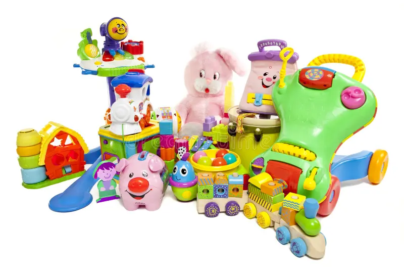
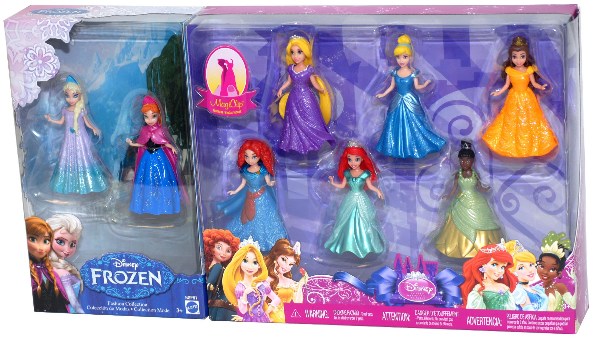

Barbie Toys

✨ Barbie Toys – Where Imagination Comes to Life
Barbie has been inspiring creativity, confidence, and dreams for generations. From classic dolls to innovative playsets, Barbie toys offer endless storytelling opportunities for children of all ages. Whether your child dreams of becoming a vet, an astronaut, a fashion designer, or a chef, there's a Barbie doll to spark their imagination.
🎀 Popular Barbie Collections:
Barbie Dreamhouse – A multi-story home full of fun and adventure.
Barbie Career Dolls – From doctors to engineers, showing kids they can be anything.
Barbie Fashionistas – Promoting diversity with dolls of all shapes, sizes, and styles.
Barbie Extra – Dolls that love fashion and expressing their unique personalities.
💡 Why Kids Love Barbie:
Encourages creative storytelling and roleplay.
Teaches empathy and problem-solving through imaginative play.
Features inclusive characters that help kids feel represented.
Barbie isn’t just a toy — it’s a world of possibility where every child can dream big and play boldly.
Baby Toys

🧸 Baby Toys – The First Steps to Fun and Learning
From the first giggle to the first grasp, baby toys play a huge role in your little one’s development. Carefully designed to stimulate senses, support motor skills, and spark joy, baby toys are more than just cute — they’re the building blocks of early learning.
🌟 What Makes Baby Toys Special?
Soft & Safe – Made with baby-friendly materials that are gentle on little hands and mouths.
Sensory Play – Bright colors, fun textures, and sounds that stimulate sight, touch, and hearing.
Developmental Boost – Helps babies practice hand-eye coordination, grasping, and movement.
Bonding Moments – Toys like rattles and plush animals create shared experiences with caregivers.
🍼 Popular Types of Baby Toys:
Rattles & Teethers – Easy to hold and soothing during teething.
Activity Gyms – Encourage reaching, rolling, and tummy time fun.
Soft Books – Introduce colors, animals, and textures in a cuddly format.
Stacking & Sorting Toys – Early logic and problem-solving in action.
Whether it’s a plush bear for bedtime snuggles or a musical mobile to soothe them to sleep, baby toys offer comfort, curiosity, and the first spark of joy on their journey of discovery.
Princess Toys

👑 Princess Toys – Where Imagination Becomes Royalty
Step into a world of castles, crowns, and fairy-tale dreams with princess toys that inspire creativity and confidence. Whether they’re ruling over a make-believe kingdom or dancing at a royal ball, these toys help kids explore their imagination while expressing their unique personalities.
✨ Why Kids Love Princess Toys:
Roleplay Adventures – Encourages storytelling, dress-up, and pretend play.
Beautiful Designs – Sparkly gowns, elegant accessories, and magical castles captivate young hearts.
Confidence & Creativity – Kids explore bravery, kindness, and leadership through their favorite princess characters.
Collectibles & Sets – From mini figurines to full playsets, there's always a new royal story to tell.
👸 Popular Princess Toy Types:
Dolls & Figurines – Featuring classic and modern princesses in stunning outfits.
Dress-Up Kits – Crowns, wands, shoes, and gowns for the full royal makeover.
Play Castles & Carriages – Detailed sets for immersive fairy-tale play.
Musical & Light-Up Toys – Add a touch of magic to every royal adventure.